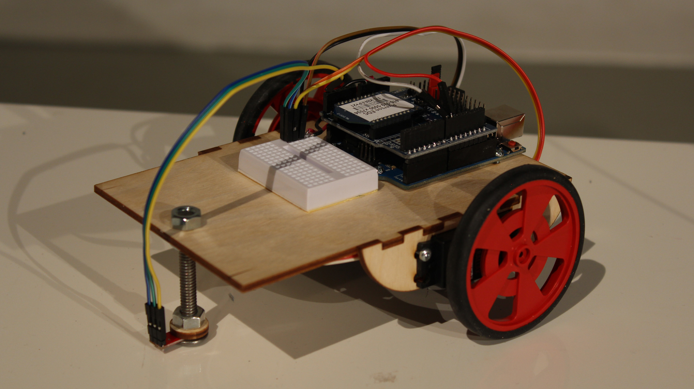
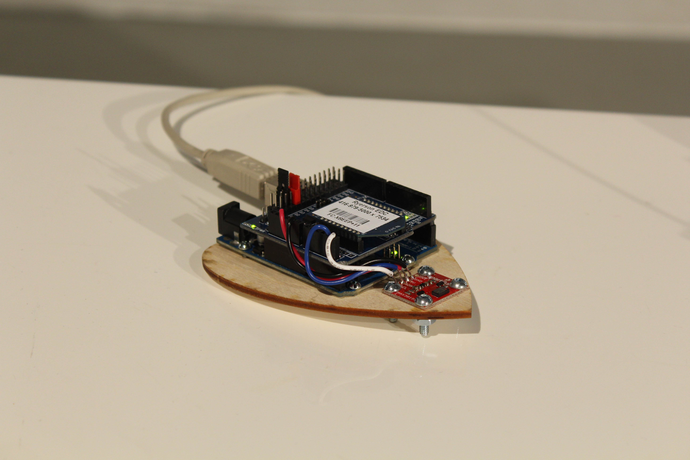
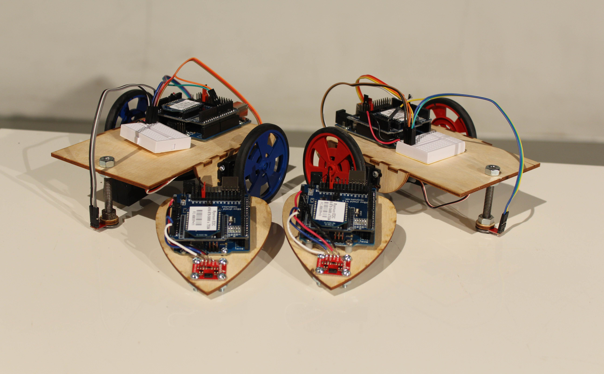

HeartBeat Racers
is a small-scale robot installation that uses two people’s heart rate to determine their robot’s speed across a line. I created this project to externalize an internal characteristic. The project achieves this by taking the heart rate of the user and using it to determine the speed of the robot they are controlling.
Content:


